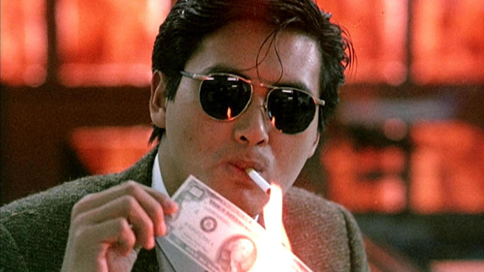

Maximum Risk
Ringo Lam 1996
This movie was way more fun than I thought it would be. I had watched Double Team the week before and was really disappointed with how poor that movie was so my expectations weren't terribly high for this one.
The action set pieces were all fantastic, both the martial arts as well as the vehicle set pieces. They went with a semi plausible plot for Jean Claude Van Damme to play twins unlike his earlier movie Double Impact. They didn't make the same mistake of Double Impact where they had both twins on screen at the same time using some poor compositing techniques.

A Better Tomorrow
John Woo 1986
I first saw A Better Tomorrow when it was broadcast on SBS as part of their Saturday night Cult Movie block presented by Des Mangan back the the mid 90s. It was my introduction to the more visceral depictions of action in Hong Kong cinema, having been more familiar with with Jackie Chan's light hearted approach to action prior.
It still held up really well, Chow Yun Fat is so much fun to watch.
A Better Tomorrow
John Woo 1986
I first saw A Better Tomorrow when it was broadcast on SBS as part of their Saturday night Cult Movie block presented by Des Mangan back the the mid 90s. It was my introduction to the more visceral depictions of action in Hong Kong cinema, having been more familiar with with Jackie Chan's light hearted approach to action prior.
It still held up really well, Chow Yun Fat is so much fun to watch.
Vengeance is Mine
Shohei Imamura 1979
I didn't really have any idea what this movie was about going into it. I thought based on the title that it would be a Takeshi Kitano style revenge movie. There was an interesting interview with the director Shohei Imamura included on the DVD. He seemed to have disdain for actors and had been working exclusively in documentaries for almost a decade before coming back with this movie. It is interesting seeing handheld camera shots in a movie this old, following the main character Iwao Enokiza around the city, in and out of train stations. I need to go back and watch Stray Dog to see how this compares.